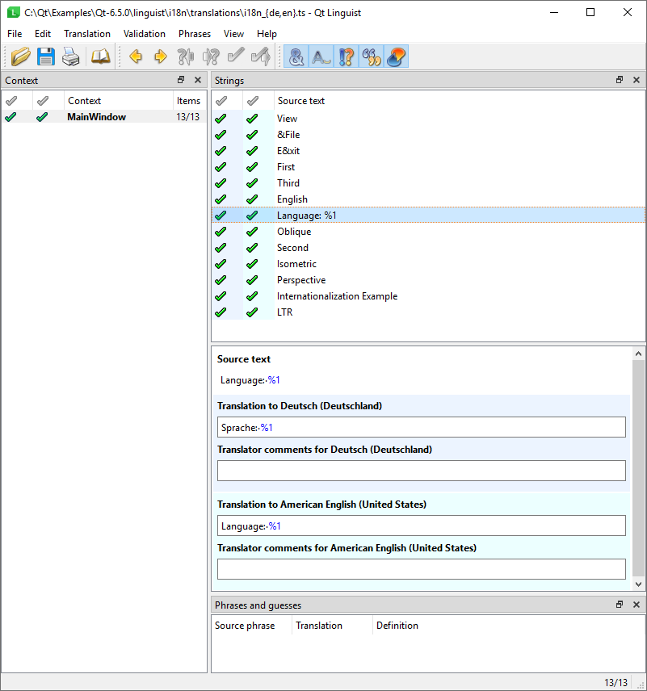
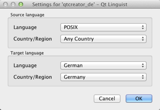

Translating strings
Open translation source (TS) files in Qt Linguist for translation. TS files are human-readable XML files containing source phrases and their translations. TS files are usually created and updated by lupdate. If you do not have a TS file, see Creating translation files to learn how to generate one.
You can use Qt Linguist also to translate files in the international XML Localization Interchange File Format (XLIFF) that are generated by other programs. However, for standard Qt projects, only the TS file format is used. Only XLIFF versions 1.1 and 1.2 are currently supported.
Qt Linguist displays the target language in the translation area, and adapts the number of input fields for plural forms accordingly. When you open several TS files to translate simultaneously, the Translator and Translator comment fields are displayed for each language. For more information about setting the location information, see Changing the target locale.
If the developer provides a disambiguating comment, you can see it in the Developer comments field.
To translate strings:
- Select File > Open to load a TS file.
- Select a context in the Context view to display translatable strings in the Strings view.

- Select a string to display it in the Source text field in the translation area. The whitespace within the source text is visualized.
- Enter the translation of the current string in the Translation field.
Double-click an existing translation in the Phrases and guesses field to use it as the translation for the current string. Qt Linguist reads the phrases from phrase books and bases the guesses on existing translations of similar phrases in the TS file.
- Optionally, enter a comment for other translators in the Translator comment field.
- To accept the translation, press Ctrl+Enter, select , or click the icon to the left of the selected source string in the string list.
- Select File > Save to save your work.
Repeat this process until all strings in the string list are marked with  (Accepted/Correct) or
(Accepted/Correct) or  (Accepted/Warnings). Then select the next context and continue.
(Accepted/Warnings). Then select the next context and continue.
To view the number of words and characters in the source text and in the translated text, select View > Statistics.
Select File > Release to create a QM file with the same base name as the current translation source file. The lrelease tool performs the same function on all of an application's translation source files.
To print the translation source and the translations, select File > Print.
To quit Qt Linguist, select File > Exit.
Moving between translatable strings
To move to the next unfinished translation, select (Next Unfinished) or press Ctrl+J.
To move to the next source text, select , press Ctrl+Shift+J, or select Translation > Next.
Phrases that require multiple translations depending on context
The same phrase may occur in more than one context without conflict. When you reach another occurrence of a translated phrase, Qt Linguist provides the previous translation as a possible translation in the Phrases and guesses view.
If a phrase occurs more than once within a particular context, it appears only once in the Context view, and the translation is applied to every occurrence within the context. If the same phrase means different things within the same context, the developer must provide a comment for each occurrence of the phrase. The duplicate phrases appear in the Context view. The developer's comments appear in the translation area on a light blue background.
Changing keyboard shortcuts
A keyboard shortcut is a key combination that performs an action.
Alt key shortcuts
In menu item and button text, a mnemonic character (marked by underlining) indicates that pressing Alt or Ctrl with the underlined character performs the same action as clicking the menu item or pressing the button.
For example, applications often use F as the mnemonic character in the File menu, so you can either click the menu item or press Alt+F to open the menu. The mnemonic character in the translatable string is prefixed with an ampersand: \&File. The translation for the string should also have an ampersand in it, preferably in front of the same character.
You can determine the meaning of an Alt key shortcut from the phrase that contains the ampersand. You can use another mnemonic character if the translated phrase does not contain the current one or if it is used in the translation of some other shortcut in the context. Some key shortcuts, usually those on the menu bar, may apply in other contexts.
Ctrl key shortcuts
Ctrl key shortcuts can exist independently of any visual control. Typically, they invoke actions in menus that would require multiple keystrokes or mouse clicks or actions that do not appear in any menu or on any button. For example, the File menu might contain a New Ctrl+N item that you can invoke by pressing Ctrl+N even when the File menu is closed.
Each Ctrl key shortcut appears in the Strings view as a separate string. For example, Ctrl+Enter. Since the string does not have a context to give it meaning, such as the context of the phrase in which an Alt key shortcut appears, you must rely on the developer to include a disambiguation comment to explain the action the Ctrl key shortcut performs. The comment appears under Developer comments in the translation area below the Source text field.
Ideally, you can copy translations for Ctrl key shortcuts by selecting Translation > Copy from source text. However, if the character does not make sense in the target language, change it. Whichever character (alpha or digit) you choose, use the form Ctrl+ followed by the upper case character. Qt automatically displays the correct name at runtime. As with Alt key shortcuts, if you change the character, make sure that it does not conflict with any other Ctrl key shortcut.
Note: Do not translate the Alt, Ctrl or Shift parts of the shortcuts, as Qt recognizes them and automatically translates them for supported languages.
Handling numbered arguments and plural forms
A numbered argument is a placeholder that will be replaced with text at runtime. It appears in a source string as a percent sign followed by a digit. For example, in the After processing file %1, file %2 is next in line string, %1 and %2 are numbered arguments that are replaced with the first and second file names at runtime. The same numbered arguments must appear in the translation, but not necessarily in the same order. A German translation of the string might reverse the phrases, for example Datei %2 wird bearbeitet, wenn Datei %1 fertig ist. Both numbered arguments appear in the translation, but in the reverse order. A numbered argument is always replaced by the same text in the translations, regardless of the position in the argument sequence in the source string.
The use of numbered arguments is often accompanied by the use of plural forms in the source text. In many languages, the form of the text will depend on the value shown, and more than one translation is required. If the developers have marked up the source text in correct way, fields for each of the possible plural forms will be available in the translation area. For more information, see Writing Source Code for Translation.
Changing the target locale
You can set the locale information explicitly in Edit > Translation File Settings. If the target language and country are not explicitly set when you open a translation source file, Qt Linguist attempts to deduct them from the translation source file name. This requires that the translation files adhere to the following file name convention: appname_language[_country].ts, where:
languageis an ISO 639 language code in lowercase.countryis an ISO 3166 two-letter country code in uppercase.
If this attempt to resolve the target language and country fails, the Translation File Settings window opens.
For example, app_de.ts sets the target language to German, and app_de_CH.ts sets the target language to German and the target country to Switzerland. This also helps loading translations for the current locale automatically. For more information, see Enable Translation.
